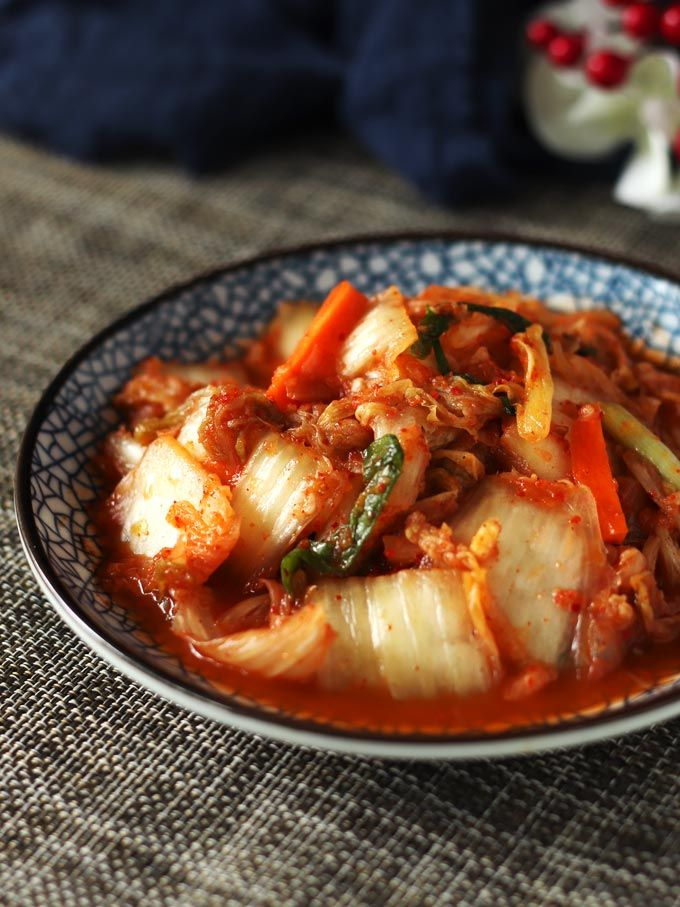
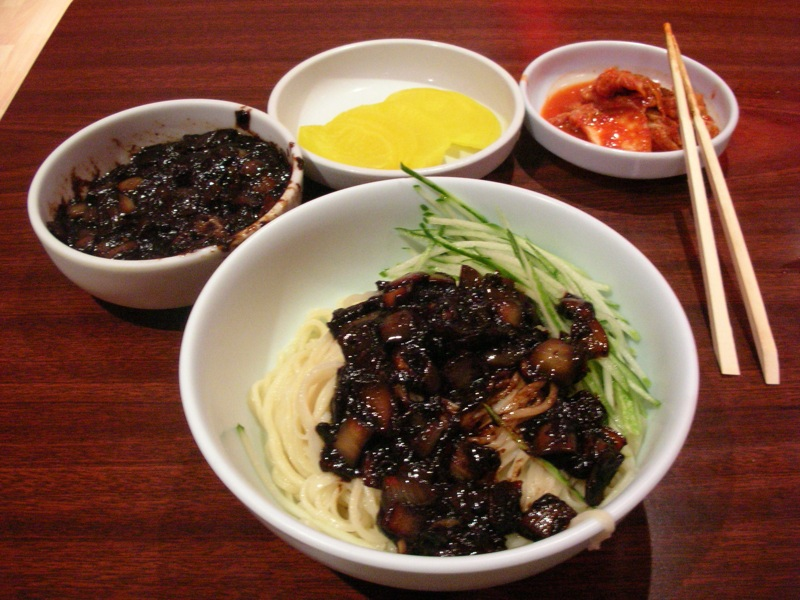
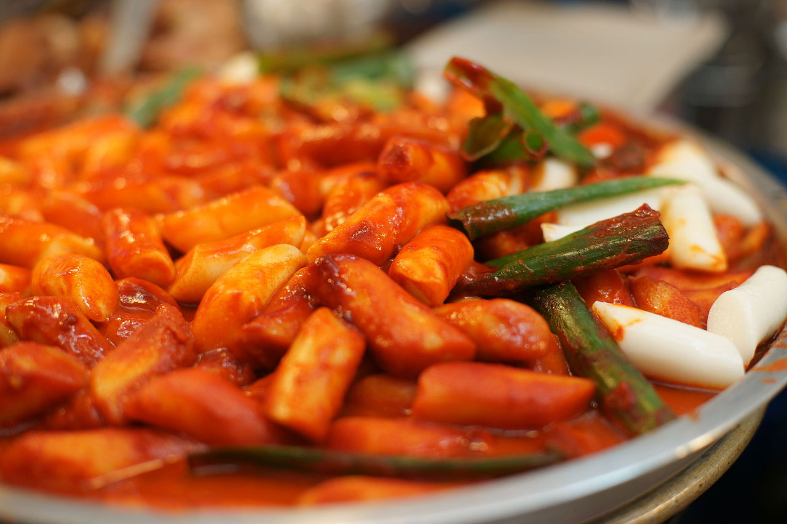
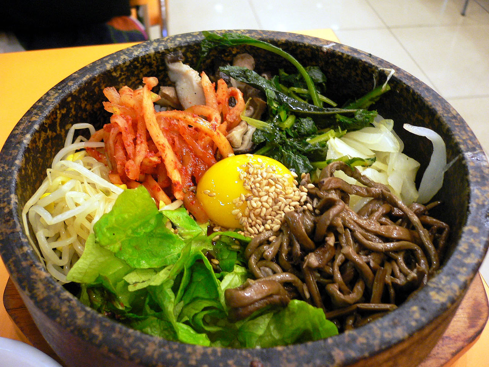

韓國是一個四季分明的地方，不管是春、夏、秋、冬各有特色與美景，四季的景色都很怡人，尤其是秋天的楓紅，讓世界變得更有思想，冬天的雪景讓世界變得很有空間，春天的芳草讓世界變得很有生命，還有夏天的熱情讓你不知身在何處，真的一景一物會讓你心動。
韓式泡菜是朝鮮族的一種傳統發酵食品，通常作為飯饌和米飯一起食用。韓式泡菜卡路里含量低，富含纖維素、維生素A、B、C並含有對人體有益的乳杆益生菌，曾在2012年被美國時代華納《健康雜誌》評為世界五大最健康食品之一。


韓式炸醬麵是一種韓式中華料理，在麵條淋上由春醬（一種咸黑豆醬）、豬肉粒和蔬菜粒、有時還有海鮮製成的濃醬。這種醬稱為炸醬。
韓式炒年糕是一道很受歡迎的韓國小吃，一般能在當地的路邊攤或布帳馬車處買到。這道菜的雛形是燉朝鮮打糕是用年糕片、肉、蛋和調味料做成的一道燉菜。炒年糕從前是朝鮮宮廷料理中的一道菜。這種炒年糕是由水煮條狀年糕、肉、菜及調味汁製成，上桌前會在上面加白果及核桃。最初的炒年糕（當時叫宮中炒年糕）是宮廷用作招待賓客的菜，因此是當時高檔菜的代表作。原來的炒年糕是一道炒菜，由條狀年糕（가래떡）與不同的材料作組合，例如牛肉、綠豆芽、蔥、香菇、蘿蔔及洋蔥，最後用醬油來調味。


韓式拌飯是韓國百年歷史的傳統米飯料理，又稱石鍋拌飯、古董飯，台灣亦有音譯為乒乓飯、嗶嗶飯，是一種著名的韓國菜餚，材料有米飯、炒過並加上調味的蔬菜、牛肉、雞蛋和苦椒醬。可以熱食或冷食，食用時把材料拌勻。